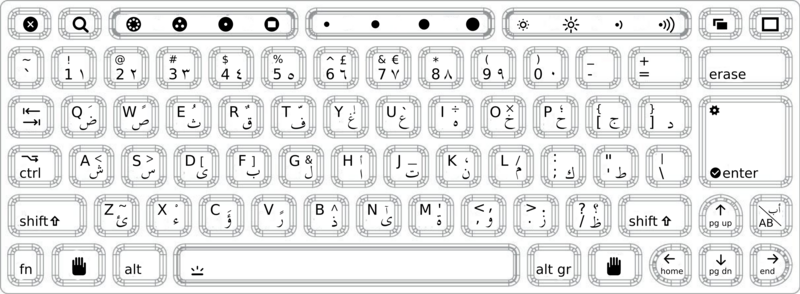

| Author: | Ian Bicking <ianb@colorstudy.com> |
|---|---|
| url: | http://blog.ianbicking.org |
| Organization: | The Open Planning Project <http://openplans.org> |
One Laptop Per Child: laptop.org
"It's an education project, not a laptop project."
—Nicholas Negroponte
Why OLPC instead of:
This is not happening:
No one is asking us to choose between these. No one is asking us at all.
Why?
"This is not just a matter of giving a laptop to each child, as if bestowing on them some magical charm. The magic lies within- within each child, within each scientist-, scholar-, or just-plain-citizen-in-the-making. This initiative is meant to bring it forth into the light of day."
—Kofi Annan
Avoid words:
Still localized:
(demo here)
These slides are in the public domain; please feel free to use or excerpt them in whatever way you like. Though preferably to help promote OLPC, of course. You can check out the source with svn co http://svn.colorstudy.com/home/ianb/olpc-presentation (the original source is in presentation.txt and was rendered to HTML with rst2s5).
| [1] | http://www.businessdayonline.com/?c=132&a=12716 |
| [2] | http://www.freeafrica.org/looting5.html |